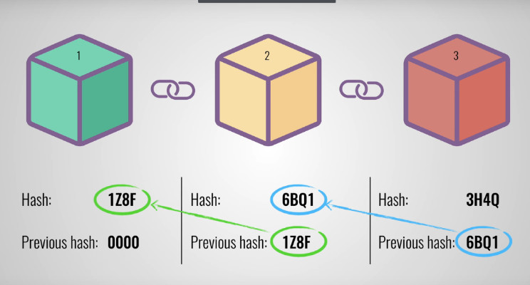

Imagine it as a book where each page reference to the previouse page
through a page number one less than a current page number.
Easy to detect if a page has been removed.
Easy to arrange the pages & identify suspicious activity. That's
why page numbers are important in any agreements.

Wait! What if the content of the page has been altered?
In that case, lets produce the page number by crunching the
content of the previous page.
Now it makes sense. If anyone changes the content of the page,
then the next page number will not match if we try to generate it
using altered page content.
Book ordering
Block ordering
Page: 1, 2, 3, 4, 5...
Block n58uf0 built on 84n855,
Block 90fn5n built on n58uf0,
Block 8n6d7j built on 90fn5n,
Implicit that the page builds on the page whose number is one
less. Page 5 builds on page 4 (5 minus 1).
84n855, n58uf0, 90fn5n, 8n6d7j represent fingerprints or
hashes of the blocks.
More about Blockchain
In real Blockchain case, each block is built on top of the recent
block and use its previous block's content as a signature.
Building a block & adding it in the Blockchain is the task of the
miner nodes.
In public Blockchain it is made computationally difficult to add a
block to prevent attacks.
Miners try to guess a number in such a way that if it gets
crunched with the most recent block's fingerprint than it will
create a new fingerprint which will be less that the last/most
recent block in Blockchain.
It takes time & computational power to add a Block in the
Blockchain. Hence there is some reward (currently 6.25 BTC in case
of Bitcoin Blockchain).
Summary
It is a decentralized ledge (data structure) where data is being
stored in blocks in the form of transactions.
Remove the dependency on the trusted third party for recording the
data in Blocks.
In public Blockchain more complex algorithm require to avoid the
malicious activities.
Since each block is built on top of previous Block immutability
has been achieved.
This all exist in memory of the computers.
Every participant of the Blockchain contains the almost same copy
of the Blockchain.